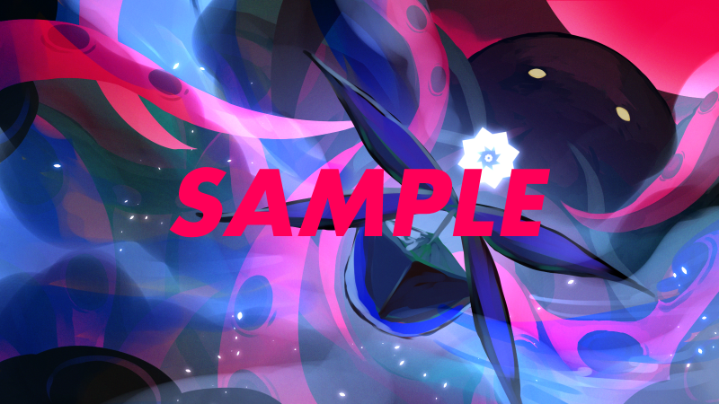

從這裡開始便是大事件的盛宴。
最後的 SAN 值大減少將在此進行，是攸關生還與喪失的重要場面。
請讓 PL 們毫無悔恨地全力演出到底。
艾瑪：「我等阿爾克那的祕寶啊，甦醒吧！」
艾瑪：「回應青之聖者的呼喚，於此時此地——」
艾瑪：「夫嗯古魯伊 穆古魯納夫 庫圖魯 拉萊耶 烏嘎夫納格魯 弗塔根！」
艾瑪：「縱使燃盡這生命的每一片碎屑仍嫌不足——我等此刻，迎來勝利之時！」
艾瑪：「現身吧，沉眠於拉萊耶的青之船啊！」
艾瑪：「為了人類，為了未來，我等的性命早在許久以前便已捨棄！」
艾瑪：「編織吧！ 希望！ 撕破吧！ 傳說！ 絕望！ 神話！」
艾瑪：「告全體機關員，神話殲滅機關 阿爾克那！ 接下來我等將登上〝阿爾克那〟，與拉萊耶之王克蘇魯正面相對！！」
━━━━━━━━━━━━━━━━━━━━━━━━━
你們在朦朧的意識中，手腳被奪去、臟腑被挖取，看見了被光所包覆的青之船劈開海之柱現身。
無意識間，聲音溢出。
————「原初阿爾克那」。
接下來將依序
發動〈原初阿爾克那〉，為殲滅克蘇魯，登上青之船 阿爾克那。
由於〝原初阿爾克那〟現身，歷代所有
〈原初阿爾克那〉的力量都匯聚於你們的心臟。
因此作為特別規則，認可此處的
〈原初阿爾克那〉，全員以
［100％］擲骰。

在各 HO 擲骰之後，分別插入下列描寫。
{HO0}，你的命運降下使青之船得以庇護的雨。
{HO1}，你的命運打破隔開青之船與神話的壁壘。
{HO2}，你的命運賜予青之船翱翔的雙翼。
{HO3}，你的命運賜予青之船前行的慈悲。
{HO4}，你的命運粉碎降臨於青之船的黑暗。
{HO5}，你的命運為青之船響起靈魂的旋律。
{HO6}，你的命運為青之船繫上神話終焉之絲。
{HO7}，你的命運鼓舞青之船的蹂躪。
{HO8}，你的命運為青之船指出通往正義之道。
{HO9}，你的命運
屠滅加諸青之船的
軛。
{HO10}，你的命運對青之船的不可逆降下斷罪。
{HO11}，你的命運向青之船傳達終焉之
理。
{HO12}，你的命運為阻擋青之船者套上枷鎖。
{HO13}，你的命運教曉青之船死亡的意義。
{HO14}，你的命運為青之船所循的一途敲響靜肅之鐘。
{HO15}，你的命運將青之船引向蠱惑的恐怖。
{HO16}，你的命運為青之船築起叛逆之盾。
{HO17}，你的命運在青之船侵略的路途上閃耀光輝。
{HO18}，你的命運弔慰青之船的暗黑之焰。
{HO19}，你的命運以救濟的陽光照亮青之船。
{HO20}，你的命運對降於青之船的災禍處以
馘首。
{HO21}，你的命運與青之船一同巡行，賜予加護。
你們在那一天，被選中了。
原初阿爾克那，其全部。是人類為拯救這個世界的最後一手。
全員，起動【青之船 阿爾克那】。
全員 SAN 值［－1d100］。
將此處的減少值，與原本 SAN 值已為負數者的負值合算。
若該值超過
2000則起動成功。此數值對 PL 不公開。
若數值不足，則將減少的隊員數（含負數部分）合算，並將其半值加入減少 SAN 值的計算。若該值仍未超過 2000，則阿爾克那的動力不足➡進入「
神話頹廢」結局。
※不過，也可藉由追加扣減同值的 SAN 值來嘗試增幅（Boost）。詳情請參照上述頁面。
〇範例：第一陣的情況
SAN 值合算：1695
戰死隊員數：1761 ➡ 2 分之 1 無條件進位為 881
1695＋881＝2576 ➡ 起動成功
〇此場景處理的注意點
在進行先前的描寫之前，務必先讓眾人扣減 SAN 值。需確認是否全員都已扣減。
若有 SKP，也請 SKP 一同確認。因為
有必要確認生還者的人數。
此處若疏於確認，會在最後的場面發生空歡喜或描寫失誤，因此請務必仔細檢查。
※當然，即使 SAN 值為正，但 HP 處於負數狀態，或 HP 曾一度達到負數狀態的探索者，皆視為喪失，請務必注意。
另外，若是因肢體缺損而免於 HP 變負的情況，則判定為 HP 仍有剩餘。
被青之船照亮的克蘇魯，緩緩蠕動。
蠕動著，彷彿預感到自身的命運般，伸出了銳利的觸手。
sCCB<=100 【觸肢】
此處的骰子是虛張聲勢（祕密骰）。即便擲出決定性成功，這次攻擊也不會命中。
然而那一擊，無法觸及【原初阿爾克那】。
對於被【隱者】指引方向的這艘船，克蘇魯不被允許施加裁決。
勉強逼近的一部分，也被【星星】之光躲開。它至少想將被【節制】擊碎的波浪餘波砸來，但才剛砸出，【太陽】、【皇后】、【正義】便將其治癒。
受【教皇】推著背，【戀人】繫起全員的絲線，【塔】築起不崩之盾。【月亮】與【皇帝】賦予足以驅動船的力量，【審判】獻上讓你們得以前行的心。
【倒吊人】束縛神話，【女祭司】不容眨眼，伴隨【魔術師】的詠唱，【世界】看定進行的方向，【命運之輪】巡轉，【愚者】、【戰車】、【力量】、【死神】、【惡魔】，向佇立的神歌詠終結。
砸出人類 100 年的責罰苦難、炸裂全部理智的船，此刻吞下寄宿於你們身上的〝原初阿爾克那〟之全部，與深淵的神話同歸於盡。
以你們的命運、瘋狂，以及被賜予的一切，這場聖戰將就此收束。
你們被命運選中了。
此處發生最終選擇。
起動了船的你們。——你們必須，向神揮出殲滅的一擊。
由全員決定船要前進的場所，並進行宣言。
▼關於前進方向，〈克蘇魯神話〉
「偉大的克蘇魯，在他自身被消滅時，他自身的女兒克緹拉將會再次將他誕生於這個世界。」
——也就是說，為了消滅克蘇魯，必須先擊倒克緹拉。
那麼，克緹拉究竟在哪裡呢？
▼僅限〈克蘇魯神話〉成功者，〈靈感〉
想起大袞與海德拉完全沒有移動過。或許在他們所在的地方有什麼重要之物。
KP 資訊：結局分歧
依前進方向，結局產生分歧。
- 朝大袞與海德拉所在的方向前進 ➡ 「
神話殲滅」
- 在阿爾克那中朝錯誤的場所前進 ➡ 「
神話再生」